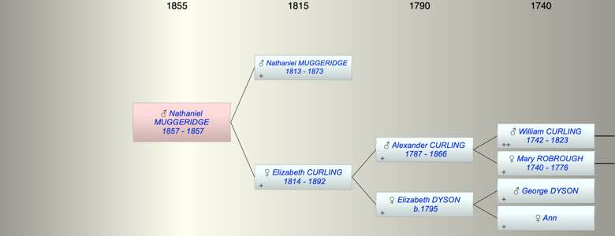

| [Index] |
| Nathaniel Alexander MUGGERIDGE (1857 - 1857) |
|  |
| b. 1857 at Lewisham |
| d. 1857 at Lewisham aged 0 |
| Parents: |
| Nathaniel MUGGERIDGE (1813 - 1873) |
| Elizabeth CURLING (1814 - 1892) |
| Events in Nathaniel Alexander MUGGERIDGE (1857 - 1857)'s life | |||||
| Date | Age | Event | Place | Notes | Src |
| 1857 | Nathaniel Alexander MUGGERIDGE was born | Lewisham | Note 1 | ||
| 1857 | Nathaniel Alexander MUGGERIDGE died | Lewisham | Note 2 | ||
| Note 1: bap 5 Aug 1857 St Paul Lewisham ex Ancestry PR |
| Note 2: buried 11 Aug 1857, 6 days old ex Ancestry PR |
| Created on a Mac™ using iFamily for Mac™ on 8 Oct 2023 |